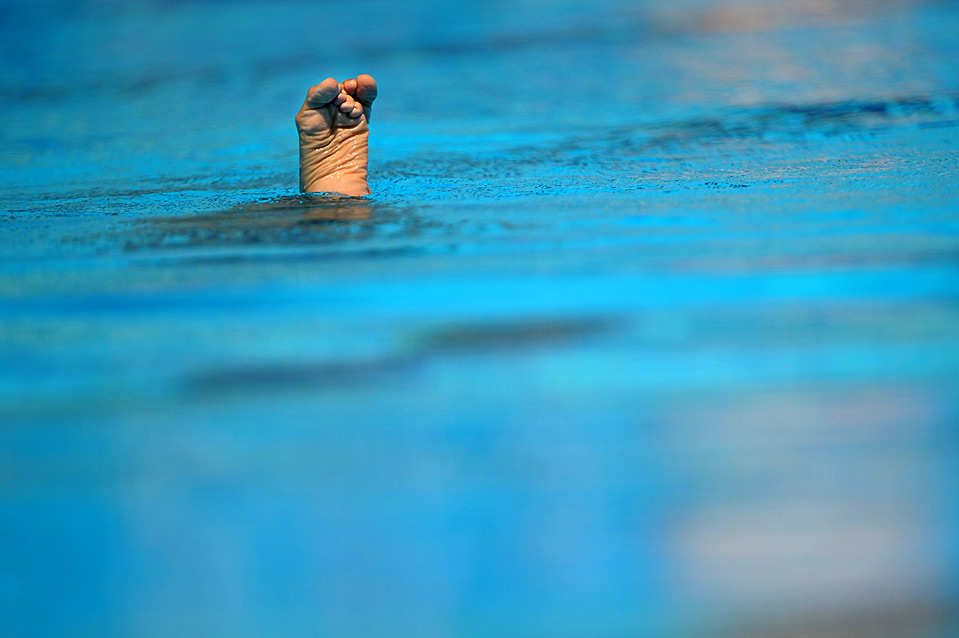

Sunday, April the 10th, 2011
back to: title, date or indexes
Solo Synchronized Swimming was a sport at the Olympic Games between 1984 and 1992. It is surprising that it took the organizers three Olympics to realize that a person swimming alone cannot be synchronized with anyone else.
From Discontinued Olympic Sports
